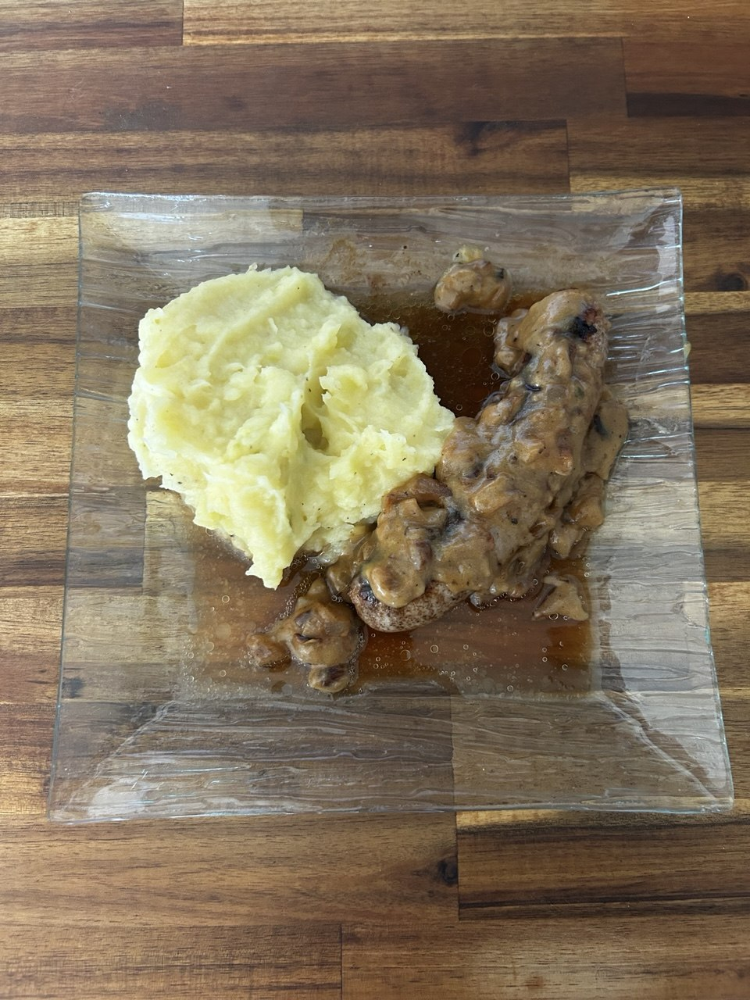

← Recettes

Saucisse Purée
🍖 Classique
⚡ Rapide
⏱️ 35 min
👥 4 pers.
🍽️ Plat
Ingrédients
- 4 saucisses de Toulouse
- 2 oignons
- 1 kg de pommes de terre
- Bouillon de légumes
- Persil
- 2 cuillères à soupe de farine
- 240 ml de bouillon de pomme de terre
- 1 cuillère à soupe de moutarde
- 1 filet de lait
Préparation
-
1Éplucher et couper en dés les pommes de terre. Les mettre dans une casserole et couvrir d'eau. Ajouter le bouillon de légumes. Laisser cuire 15-20 min
-
2Faire chauffer un filet d'huile dans une poêle à feu moyen-vif et y faire revenir les saucisses 2-3 min. Baisser le feu sur moyen et couvrir 8-10 min en les retournant régulièrement. Réserver hors de la poêle
-
3Ciseler finement l'oignon. Faire fondre une noix de beurre dans la poêle à feu moyen-vif et y faire revenir les oignons 5-8 min. Ajouter le persil, sel et poivre
-
4Réduire le feu à moyen et déglacer avec du vinaigre balsamique. Ajouter la farine et remuer 30 sec. Incorporer le bouillon et la moutarde. Laisser réduire 2-3 min
-
5Écraser les pommes de terre. Ajouter un filet de lait, une noix de beurre, sel et poivre